Propósito de este material
Este documento complementa el Taller 2 · Estimación por intervalos y pruebas de hipótesis (datos de macroalgas, pastos marinos, corales y pargos). No lo reemplaza. Aquí se recorre la misma lógica con un conjunto de datos distinto —invertebrados acuáticos de 20 quebradas en 4 cuencas— y se amplían tres temas que en el taller solo se mencionan:
- La ruta de decisión completa para elegir la prueba (Sección 2), incluido el caso de una sola muestra frente a un valor de referencia (Sección 4).
- Las pruebas de comparaciones múltiples (post hoc), que indican entre qué grupos están las diferencias (Sección 7).
- El tamaño de muestra por potencia (Cohen) y por cobertura de la población (Sección 8).
Código
# Librerías requeridas
library(tidyverse) # dplyr, tidyr, ggplot2...
library(readxl) # Lectura de archivos Excel
library(car) # leveneTest(), durbinWatsonTest(), qqPlot()
library(pwr) # Tamaño de muestra y potencia (Cohen)
library(multcomp) # glht(): Tukey y Dunnett
library(rstatix) # games_howell_test()
theme_set(theme_bw()) # Tema común para todas las figurasConceptos básicos
El contraste de hipótesis permite decidir si los datos aportan evidencia suficiente contra una afirmación de partida sobre una o más poblaciones. En la estadística clásica, el caso más frecuente es comparar las medias de dos o más grupos.
- Hipótesis nula (H₀): afirmación de partida, en general la ausencia de efecto o de diferencias (p. ej., μ₁ = μ₂).
- Hipótesis alterna (Hₐ): lo que se acepta si se rechaza H₀. Puede ser bilateral (μ₁ ≠ μ₂) o unilateral (μ₁ > μ₂ o μ₁ < μ₂).
- Estadístico de contraste: valor calculado con los datos (t, F, W, H…) cuya distribución bajo H₀ es conocida, y del que se obtiene el valor p.
No rechazar H₀ no demuestra que sea cierta: solo indica que los datos no aportan evidencia suficiente contra ella. Además, con un tamaño de muestra suficientemente grande casi cualquier diferencia, por pequeña que sea, resulta “significativa”. Por eso se recomienda reportar siempre el tamaño del efecto y los intervalos de confianza, no solo el valor p.
Tipos de contraste
| Tipo | Pregunta | Pruebas habituales |
|---|---|---|
| Diferencias entre muestras | ¿Difieren las medias de 2 o más grupos? | t de Student, ANOVA, Welch, Wilcoxon, Kruskal-Wallis |
| Relación funcional | ¿Cómo responde Y a cambios en X? | Regresión lineal y no lineal, GLM (Semana 2) |
| Asociación | ¿Varían conjuntamente dos o más variables? | Correlación bivariada y análisis multivariados |
Contrastes para verificar supuestos
Las pruebas paramétricas (t, ANOVA) tienen más potencia que sus alternativas no paramétricas, siempre que se cumplan sus tres supuestos:
- Normalidad de los residuos — prueba de Shapiro-Wilk y gráfico Q-Q.
- Homogeneidad de varianzas (homocedasticidad) — pruebas de Bartlett y de Levene.
- Independencia de las observaciones — se garantiza con el diseño (aleatorización, réplicas verdaderas) y se puede explorar en los residuos con el estadístico de Durbin-Watson.
Pruebas para dos muestras
- t de Student para muestras independientes. H₀: μ₁ = μ₂. Por defecto, R aplica la corrección de Welch, que no asume varianzas iguales.
- t de Student pareada. Dos mediciones sobre las mismas unidades (antes/después, el mismo sitio en dos épocas). H₀: μ_d = 0, donde μ_d es la media de las diferencias; equivale a una t de una muestra sobre esas diferencias.
- Wilcoxon-Mann-Whitney (suma de rangos). Alternativa no paramétrica a la t independiente.
- Wilcoxon de rangos con signo. Alternativa no paramétrica a la t pareada.
Pruebas para tres o más muestras
- ANOVA de una vía. Evalúa el efecto de un factor con más de dos niveles.
- Factor fijo (niveles elegidos por quien investiga, p. ej. pH alto/medio/bajo). H₀: μ₁ = μ₂ = … = μₖ.
- Factor aleatorio (niveles elegidos al azar de una población de niveles posibles). H₀: σ²ₐ = 0, es decir, no hay varianza entre niveles.
- ANOVA de Welch. Alternativa paramétrica cuando los residuos son normales pero las varianzas son desiguales; ajusta los grados de libertad. H₀: igualdad de medias.
- Kruskal-Wallis. Alternativa no paramétrica basada en rangos, útil cuando falla la normalidad o hay valores atípicos. H₀: todas las muestras provienen de la misma distribución; se interpreta como igualdad de medianas solo si las distribuciones tienen forma y dispersión similares.
- Pruebas de aleatorización (permutación). Construyen la distribución del estadístico bajo H₀ reordenando los datos al azar, sin asumir normalidad (Sección 6.4). No corrigen la falta de independencia: asumen que las observaciones son intercambiables.
- Comparaciones múltiples (post hoc). Tras un resultado significativo, identifican entre qué pares de grupos están las diferencias, controlando el error tipo I acumulado (Sección 7).
NotaCorrección respecto a la versión 2021
En las notas originales, la definición de la prueba de Kruskal-Wallis aparecía por error bajo el título “Prueba de Welch”. Además, Kruskal-Wallis sí se ve afectada cuando la dispersión difiere mucho entre grupos. La prueba de Bartlett es de homogeneidad de varianzas, no una prueba post hoc. La prueba de Friedman no es “para dos factores”: es la alternativa no paramétrica al ANOVA de bloques al azar (un factor más un bloque).
Ruta de decisión
La siguiente clave resume cómo elegir la prueba. Es la versión actualizada de las claves del taller original y coincide con la tabla de síntesis de las diapositivas.
%%{init: {"themeVariables": {"fontSize": "16px"}, "flowchart": {"nodeSpacing": 25, "rankSpacing": 45}}}%%
flowchart LR
A{¿Cuántos grupos<br>se comparan?} -->|1| B[Comparar media con<br>valor de referencia]
A -->|2| C{¿Independientes<br>o pareadas?}
A -->|3 o más| D[Ajustar ANOVA y<br>revisar supuestos]
B --> E[Normalidad e<br>independencia]
E -->|Se cumplen| F([t de una muestra])
E -->|Falla normalidad| G([Transformar o Wilcoxon])
C -->|Independientes| H[Revisar normalidad<br>y varianzas]
H -->|Normalidad adecuada| I([t de Welch])
H -->|Falla normalidad| J([Transformar o Wilcoxon])
C -->|Pareadas| K[Revisar normalidad<br>de las diferencias]
K -->|Se cumple| L([t pareada])
K -->|Falla| M([Transformar o Wilcoxon])
D -->|Se cumplen| N([ANOVA + Tukey])
D -->|Solo falla<br>homocedasticidad| O([Welch + Games-Howell])
D -->|Falla normalidad| P([Transformar, GLM<br>o Kruskal-Wallis])
classDef pregunta fill:#E3F2FD,stroke:#1E88E5,color:#0D47A1;
classDef prueba fill:#E8F5E9,stroke:#43A047,color:#1B5E20;
classDef alternativa fill:#FDECEA,stroke:#E57373,color:#8E2A2A;
class A,B,C,D,E,H,K pregunta;
class F,I,L,N,O prueba;
class G,J,M,P alternativa;
En la versión escrita de la clave:
- Una muestra. Comparar la media con un valor de referencia mediante
t.test(x, mu = valor); revisar normalidad e independencia. - Dos muestras: diagnóstico. Si son independientes, revisar normalidad en cada grupo y homogeneidad de varianzas; si son pareadas, revisar la distribución de las diferencias e independencia.
- Dos muestras: prueba.
- Independientes:
t.test(y ~ grupo, data = datos)(Welch por defecto;var.equal = TRUEpara la t clásica). - Pareadas:
t.test(x_antes, x_despues, paired = TRUE). - Normalidad no cumplida: transformar y volver al diagnóstico; si no funciona,
wilcox.test().
- Independientes:
- Tres o más muestras: diagnóstico. Ajustar el modelo con
aov()y revisar normalidad de los residuos, homocedasticidad e independencia. - Tres o más muestras: prueba.
- Supuestos cumplidos: ANOVA (
aov()) y, si es significativo, Tukey. - Residuos normales pero varianzas desiguales: ANOVA de Welch (
oneway.test(var.equal = FALSE)) y Games-Howell. - Residuos no normales:
- Si se conoce la distribución de la variable (conteos, proporciones), un GLM (Semana 2).
- Si no, Kruskal-Wallis y comparaciones no paramétricas.
- Si el muestreo no fue aleatorio, el problema es de diseño; ninguna prueba lo corrige.
- Supuestos cumplidos: ANOVA (
NotaCorrección respecto a la versión 2021
Para una prueba unilateral, la hipótesis nula es la desigualdad contraria a la que se quiere demostrar. Por ejemplo, H₀: μ₁ ≤ μ₂ frente a Hₐ: μ₁ > μ₂, y no “H₀: μ₁ > μ₂” como aparecía en las claves originales. A partir de R 4.4, t.test() ya no admite paired = TRUE con la notación de fórmula (y ~ grupo); para muestras pareadas se usan dos vectores.
Los datos y su exploración
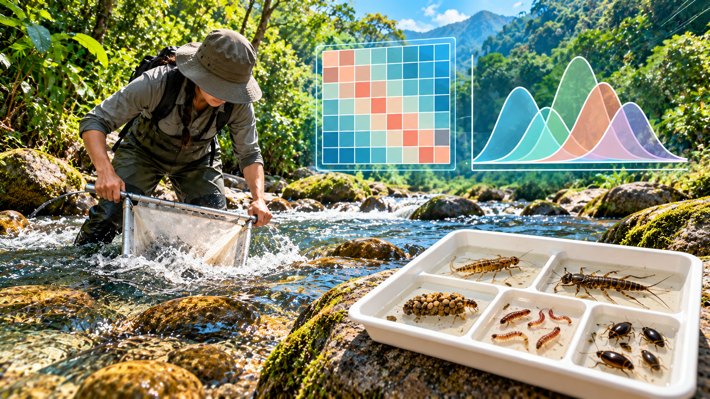
La base Insectos.xlsx contiene 20 quebradas (quebrada) agrupadas en 4 cuencas (cuenca), con 5 quebradas por cuenca. Incluye dos variables fisicoquímicas (pH, temp), la abundancia de cinco órdenes de insectos acuáticos (Efem, Plec, Tric, Dipt, Cole) y la abundancia total (Ab). El objetivo es comparar la abundancia total entre cuencas: primero dos cuencas con una prueba t y luego las cuatro con un ANOVA.
- Decargar datos de los ejercicios: insectos.xlsx
Código
# Leer la hoja de cálculo
datos <- read_excel("Insectos.xlsx") %>%
mutate(cuenca = factor(cuenca)) # Convertir grupo a factor
glimpse(datos)Rows: 20
Columns: 10
$ quebrada <dbl> 1, 4, 11, 13, 19, 3, 10, 15, 16, 17, 2, 5, 7, 8, 20, 6, 9, 12…
$ cuenca <fct> cuen1, cuen1, cuen1, cuen1, cuen1, cuen2, cuen2, cuen2, cuen2…
$ pH <dbl> 6.8, 7.3, 5.6, 6.3, 5.6, 6.3, 7.5, 7.0, 7.0, 5.7, 5.5, 7.2, 7…
$ temp <dbl> 17.4, 16.8, 16.0, 17.8, 18.2, 17.0, 16.8, 18.2, 19.8, 15.3, 1…
$ Efem <dbl> 26, 17, 9, 2, 6, 7, 19, 12, 13, 5, 17, 27, 19, 6, 3, 28, 9, 4…
$ Plec <dbl> 4, 6, 3, 3, 4, 2, 3, 5, 6, 0, 1, 3, 4, 4, 4, 6, 5, 1, 8, 5
$ Tric <dbl> 9, 9, 28, 25, 24, 25, 12, 23, 9, 32, 23, 16, 21, 21, 23, 19, …
$ Dipt <dbl> 30, 25, 24, 21, 12, 10, 12, 9, 0, 11, 16, 25, 19, 30, 39, 30,…
$ Cole <dbl> 3, 1, 3, 6, 13, 1, 3, 4, 15, 8, 17, 2, 13, 12, 4, 21, 5, 9, 8…
$ Ab <dbl> 72, 58, 67, 57, 59, 45, 49, 53, 43, 56, 74, 73, 76, 73, 73, 1…
Tip
read_excel() importa directamente la hoja de cálculo. Convertir cuenca en factor es indispensable para las funciones de comparación entre grupos.
Código
# Resumen por cuenca
datos %>%
group_by(cuenca) %>%
summarise(n = n(),
media = mean(Ab),
de = sd(Ab),
mediana = median(Ab),
min = min(Ab),
max = max(Ab))# A tibble: 4 × 7
cuenca n media de mediana min max
<fct> <int> <dbl> <dbl> <dbl> <dbl> <dbl>
1 cuen1 5 62.6 6.58 59 57 72
2 cuen2 5 49.2 5.40 49 43 56
3 cuen3 5 73.8 1.30 73 73 76
4 cuen4 5 88 10.1 85 78 104Correlaciones entre variables
Código
# Matriz de correlación en formato largo para ggplot2
# Calcular correlaciones
M <- datos %>% select(pH:Ab) %>% cor()
# Preparar matriz para graficar
M %>%
as_tibble(rownames = "var1") %>%
pivot_longer(-var1, names_to = "var2", values_to = "r") %>%
mutate(across(c(var1, var2), ~ factor(.x, levels = colnames(M)))) %>%
ggplot(aes(var1, var2, fill = r)) +
geom_tile(color = "white") +
geom_text(aes(label = round(r, 2)), size = 3) +
scale_fill_gradient2(low = "firebrick", mid = "white", high = "steelblue",
limits = c(-1, 1)) +
labs(x = NULL, y = NULL, fill = "r de Pearson")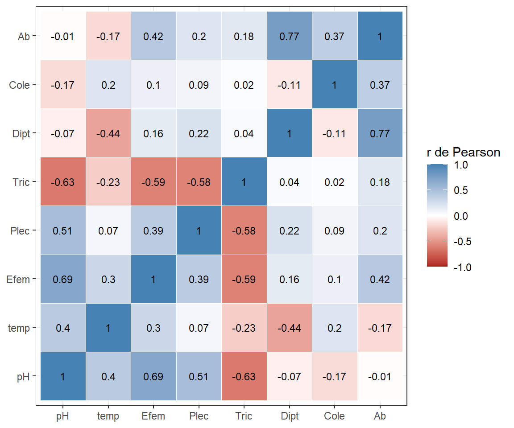
Advertencia
Ab es la suma de los cinco órdenes (Efem + Plec + Tric + Dipt + Cole). Su correlación con cada orden, por ejemplo r = 0,77 con Dípteros, es en parte una correlación parte-todo y no una asociación ecológica independiente. Conviene tenerlo en cuenta al interpretar la última fila de la matriz.
Código
# Relación de la abundancia total con pH, Tricópteros y Dípteros
datos %>%
pivot_longer(c(pH, Tric, Dipt), names_to = "variable", values_to = "valor") %>%
ggplot(aes(valor, Ab)) +
geom_point(aes(color = cuenca), size = 2.5) +
geom_smooth(method = "lm", se = FALSE, color = "darkgreen") + # Tendencia lineal
geom_smooth(method = "loess", se = FALSE, linetype = 2,
color = "firebrick", span = 1) + # Tendencia suavizada
facet_wrap(~ variable, scales = "free_x") +
labs(x = NULL, y = "Abundancia total")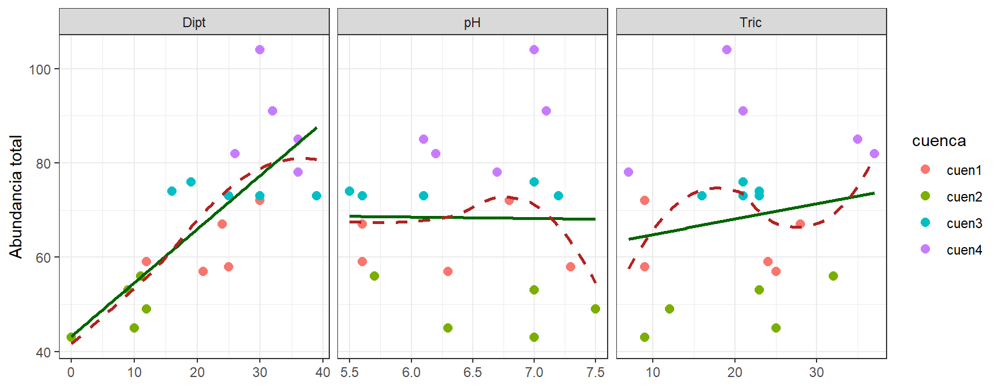
Distribución de la abundancia
Código
# Densidad general y por cuenca (Quarto las ubica lado a lado)
g1 <- ggplot(datos, aes(Ab)) +
geom_density(fill = "lightblue", alpha = 0.6) +
geom_rug() +
labs(x = "Abundancia de insectos", y = "Densidad", title = "Todas las cuencas")
g2 <- ggplot(datos, aes(Ab, fill = cuenca)) +
geom_density(alpha = 0.5) +
labs(x = "Abundancia de insectos", y = "Densidad", title = "Por cuenca")
g1
g2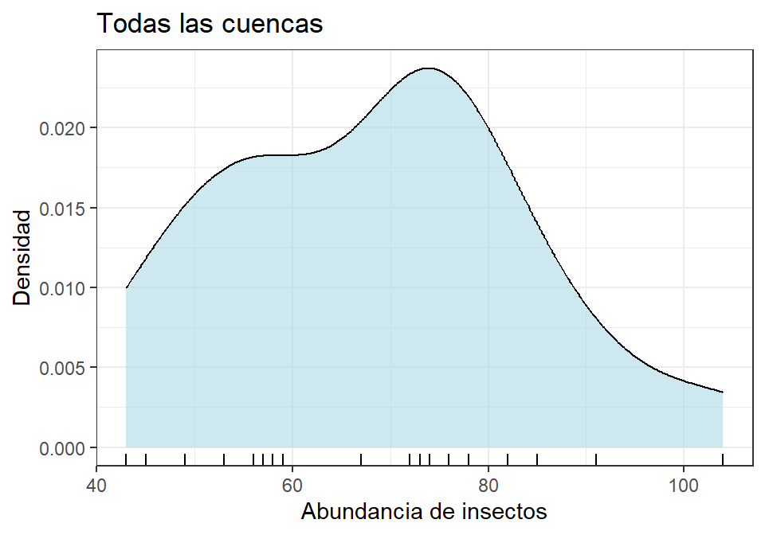
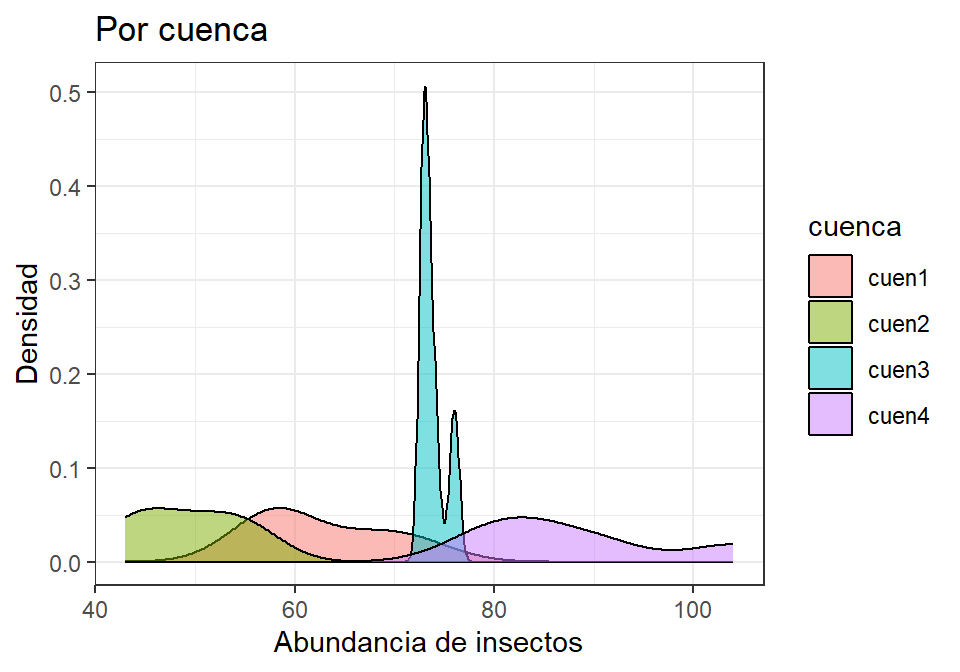
Código
# Histograma por cuenca
ggplot(datos, aes(Ab, fill = cuenca)) +
geom_histogram(binwidth = 5, color = "white") +
facet_wrap(~ cuenca, nrow = 1) +
labs(x = "Abundancia", y = "Frecuencia") +
theme(legend.position = "none")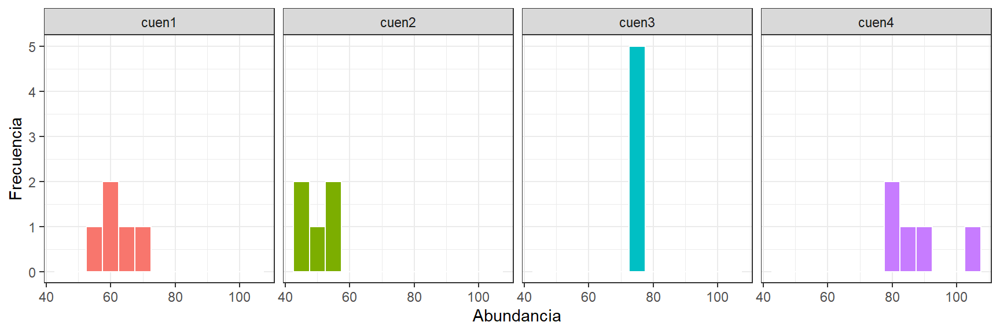
Código
# Cajas y bigotes con los datos individuales
ggplot(datos, aes(cuenca, Ab, color = cuenca)) +
geom_boxplot(outlier.shape = NA) +
geom_jitter(width = 0.1, size = 2) +
labs(x = "Cuenca", y = "Abundancia") +
theme(legend.position = "none")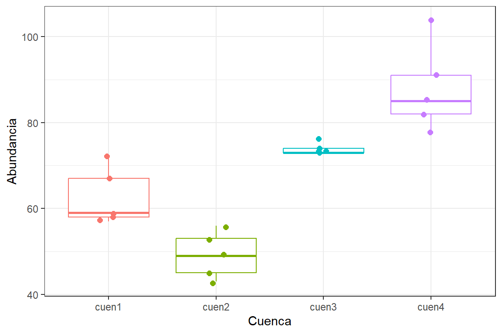
La distribución general parece aproximadamente simétrica, pero al separar por cuenca aparece un patrón llamativo en cuen3: sus valores son casi idénticos (73, 73, 73, 74, 76). Esa dispersión mínima, muy distinta a la de las otras cuencas, será clave en los supuestos (Sección 6.1).
Nota
En el taller original, geom_histogram(aes(y = ..density..)) usaba una notación que ggplot2 ya marcó como obsoleta; hoy se escribe after_stat(density). Aquí se usan frecuencias directamente, más fáciles de leer con 5 datos por grupo.
Código
# Gráficos Q-Q: datos crudos y transformados con log10
datos %>%
transmute(`Abundancia (cruda)` = Ab,
`log10(Ab + 1)` = log10(Ab + 1)) %>%
pivot_longer(everything(), names_to = "escala", values_to = "valor") %>%
ggplot(aes(sample = valor)) +
stat_qq(color = "steelblue") +
stat_qq_line() +
facet_wrap(~ escala, scales = "free_y") +
labs(x = "Cuantiles teóricos", y = "Cuantiles de la muestra")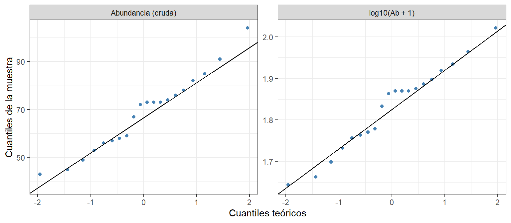
Una muestra: contraste contra un valor de referencia
La nota de clase original también contemplaba el caso en que se contrasta la media de una sola muestra frente a un valor de referencia.
En este caso se plantea, por ejemplo, H₀: μ = μ₀ frente a Hₐ: μ ≠ μ₀. Solo se requiere evaluar la distribución de la variable y la independencia de las observaciones; no se evalúa homogeneidad de varianzas porque existe un solo grupo.
Como ejercicio ilustrativo, se contrasta la abundancia media de la cuenca 1 con un valor de referencia de 60 individuos:
Código
# Seleccionar una sola muestra
cuen1 <- datos %>%
filter(cuenca == "cuen1") %>%
pull(Ab)
# Calcular media muestral
mean(cuen1)[1] 62.6Código
# Evaluar normalidad
shapiro.test(cuen1)
Shapiro-Wilk normality test
data: cuen1
W = 0.85118, p-value = 0.1983Código
# Contrastar contra el valor de referencia
t.test(cuen1, mu = 60)
One Sample t-test
data: cuen1
t = 0.88352, df = 4, p-value = 0.4269
alternative hypothesis: true mean is not equal to 60
95 percent confidence interval:
54.42951 70.77049
sample estimates:
mean of x
62.6 La muestra cumple la normalidad (p = 0,20) y la media observada (62,6) no difiere significativamente del valor de referencia (t = 0,88; gl = 4; p = 0,43). El valor de referencia debe estar definido por el problema biológico o por conocimiento previo, no elegirse después de observar los resultados.
Dos muestras: prueba t para las cuencas 1 y 2
Pregunta: ¿difiere la abundancia media de insectos entre la cuenca 1 y la cuenca 2?
Código
# Seleccionar las dos cuencas (sin índices de filas fijos)
# Seleccionar dos grupos
cuenca12 <- datos %>%
filter(cuenca %in% c("cuen1", "cuen2")) %>%
droplevels()
# Resumir cada grupo
cuenca12 %>%
group_by(cuenca) %>%
summarise(media = mean(Ab), de = sd(Ab))# A tibble: 2 × 3
cuenca media de
<fct> <dbl> <dbl>
1 cuen1 62.6 6.58
2 cuen2 49.2 5.40Supuestos
Código
# Q-Q por cuenca
ggplot(cuenca12, aes(sample = Ab, color = cuenca)) +
stat_qq(size = 2) +
stat_qq_line() +
facet_wrap(~ cuenca, scales = "free_y") +
labs(x = "Cuantiles teóricos", y = "Cuantiles de la muestra") +
theme(legend.position = "none")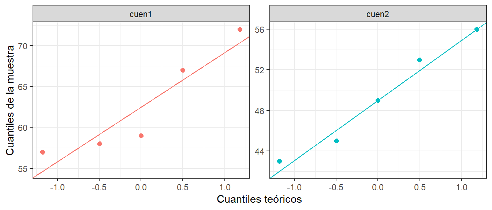
Código
# Evaluar normalidad
cuenca12 %>%
group_by(cuenca) %>%
summarise(W = shapiro.test(Ab)$statistic,
p_valor = shapiro.test(Ab)$p.value)# A tibble: 2 × 3
cuenca W p_valor
<fct> <dbl> <dbl>
1 cuen1 0.851 0.198
2 cuen2 0.957 0.785Código
# Evaluar homogeneidad
bartlett.test(Ab ~ cuenca, data = cuenca12)
Bartlett test of homogeneity of variances
data: Ab by cuenca
Bartlett's K-squared = 0.13709, df = 1, p-value = 0.7112Código
leveneTest(Ab ~ cuenca, data = cuenca12)Levene's Test for Homogeneity of Variance (center = median)
Df F value Pr(>F)
group 1 0.0475 0.8329
8 Código
# Evaluar independencia
set.seed(2026) # El p-valor de Durbin-Watson se obtiene por remuestreo
durbinWatsonTest(lm(Ab ~ cuenca, data = cuenca12)) lag Autocorrelation D-W Statistic p-value
1 -0.4085517 2.352966 0.826
Alternative hypothesis: rho != 0Los tres supuestos se cumplen (todos los valores p > 0,05). Con solo 5 datos por grupo, sin embargo, estas pruebas tienen poca potencia para detectar desviaciones; por eso los gráficos Q-Q son igual de importantes que los valores p.
Tamaño de muestra y potencia
pwr.t.test() resuelve el parámetro que se deja sin especificar. Para planear un estudio antes del muestreo, se fija un tamaño de efecto de referencia; Cohen propone d = 0,2, 0,5 y 0,8 como efectos pequeño, mediano y grande:
Código
# Calcular tamaño muestral
pwr.t.test(d = 0.5, sig.level = 0.05, power = 0.80, type = "two.sample")
Two-sample t test power calculation
n = 63.76561
d = 0.5
sig.level = 0.05
power = 0.8
alternative = two.sided
NOTE: n is number in *each* groupSe necesitarían unas 64 quebradas por cuenca, muy por encima de las 5 disponibles. Pero el efecto observado aquí no es mediano. El tamaño del efecto se puede calcular con los propios datos (d de Cohen = diferencia de medias / desviación estándar combinada):
Código
# Calcular d de Cohen
resumen12 <- cuenca12 %>%
group_by(cuenca) %>%
summarise(media = mean(Ab), var = var(Ab))
d_obs <- abs(diff(resumen12$media)) / sqrt(mean(resumen12$var))
d_obs[1] 2.225619Código
# Calcular réplicas necesarias
pwr.t.test(d = d_obs, sig.level = 0.05, power = 0.80)
Two-sample t test power calculation
n = 4.373322
d = 2.225619
sig.level = 0.05
power = 0.8
alternative = two.sided
NOTE: n is number in *each* group
Tip
Un efecto tan grande (d ≈ 2,2) se detecta con unas 5 réplicas por grupo. La pregunta útil para el diseño no es “¿cuál fue el efecto observado?”, sino “¿cuál es el mínimo efecto de interés ecológico que el estudio debe poder detectar?”. Los datos de un estudio piloto, como este, sirven para estimar la variabilidad y planear el siguiente muestreo.
La prueba
Código
# Bilateral. H0: μ1 = μ2 ; Ha: μ1 ≠ μ2
t.test(Ab ~ cuenca, data = cuenca12)
Welch Two Sample t-test
data: Ab by cuenca
t = 3.519, df = 7.7084, p-value = 0.008338
alternative hypothesis: true difference in means between group cuen1 and group cuen2 is not equal to 0
95 percent confidence interval:
4.560849 22.239151
sample estimates:
mean in group cuen1 mean in group cuen2
62.6 49.2 Código
# Unilateral. H0: μ1 ≤ μ2 ; Ha: μ1 > μ2
t.test(Ab ~ cuenca, alternative = "greater", data = cuenca12)
Welch Two Sample t-test
data: Ab by cuenca
t = 3.519, df = 7.7084, p-value = 0.004169
alternative hypothesis: true difference in means between group cuen1 and group cuen2 is greater than 0
95 percent confidence interval:
6.284175 Inf
sample estimates:
mean in group cuen1 mean in group cuen2
62.6 49.2 Código
# Unilateral opuesta. H0: μ1 ≥ μ2 ; Ha: μ1 < μ2
t.test(Ab ~ cuenca, alternative = "less", data = cuenca12)
Welch Two Sample t-test
data: Ab by cuenca
t = 3.519, df = 7.7084, p-value = 0.9958
alternative hypothesis: true difference in means between group cuen1 and group cuen2 is less than 0
95 percent confidence interval:
-Inf 20.51583
sample estimates:
mean in group cuen1 mean in group cuen2
62.6 49.2 La prueba bilateral indica diferencias significativas (t = 3,52; gl = 7,7; p = 0,008), con una abundancia media mayor en la cuenca 1 (62,6 frente a 49,2 individuos). El intervalo de confianza del 95 % para la diferencia (4,6 a 22,2) no incluye el cero.
En las pruebas unilaterales, "greater" y "less" se refieren a la diferencia primer nivel − segundo nivel del factor (aquí, cuen1 − cuen2). Solo la hipótesis μ₁ > μ₂ resulta significativa (p = 0,004).
Advertencia
La dirección de una prueba unilateral se decide antes de ver los datos, con base en una hipótesis ecológica. Probar las dos direcciones y quedarse con la significativa equivale a duplicar el error tipo I.
Alternativa no paramétrica (si la normalidad no se cumpliera):
Código
wilcox.test(Ab ~ cuenca, data = cuenca12)
Wilcoxon rank sum exact test
data: Ab by cuenca
W = 25, p-value = 0.007937
alternative hypothesis: true location shift is not equal to 0Tres o más muestras: ANOVA de una vía para las cuatro cuencas
Pregunta: ¿difiere la abundancia media de insectos entre las cuatro cuencas?
H₀: μ₁ = μ₂ = μ₃ = μ₄. Hₐ: al menos una media difiere.
Código
# Ajustar modelo ANOVA
Ab.anov <- aov(Ab ~ cuenca, data = datos)
# Consultar resultados
summary(Ab.anov) Df Sum Sq Mean Sq F value Pr(>F)
cuenca 3 4078 1359.3 30.77 7.05e-07 ***
Residuals 16 707 44.2
---
Signif. codes: 0 '***' 0.001 '**' 0.01 '*' 0.05 '.' 0.1 ' ' 1Supuestos
Normalidad. Se puede revisar en cada grupo o en los residuos del modelo. Con pocos datos por grupo se recomiendan los residuos: reúnen las 20 observaciones en una sola prueba, con más potencia que cuatro pruebas de 5 datos.
Código
# Normalidad por cuenca
datos %>%
group_by(cuenca) %>%
summarise(W = shapiro.test(Ab)$statistic,
p_valor = shapiro.test(Ab)$p.value)# A tibble: 4 × 3
cuenca W p_valor
<fct> <dbl> <dbl>
1 cuen1 0.851 0.198
2 cuen2 0.957 0.785
3 cuen3 0.735 0.0214
4 cuen4 0.923 0.549 Código
# Normalidad de los residuos del ANOVA
shapiro.test(residuals(Ab.anov))
Shapiro-Wilk normality test
data: residuals(Ab.anov)
W = 0.94928, p-value = 0.3563Código
# Histograma y Q-Q de los residuos
res <- tibble(residuo = residuals(Ab.anov))
g1 <- ggplot(res, aes(residuo)) +
geom_histogram(binwidth = 5, fill = "lightblue", color = "white") +
labs(x = "Residuos", y = "Frecuencia")
g2 <- ggplot(res, aes(sample = residuo)) +
stat_qq(color = "steelblue") +
stat_qq_line() +
labs(x = "Cuantiles teóricos", y = "Residuos")
g1
g2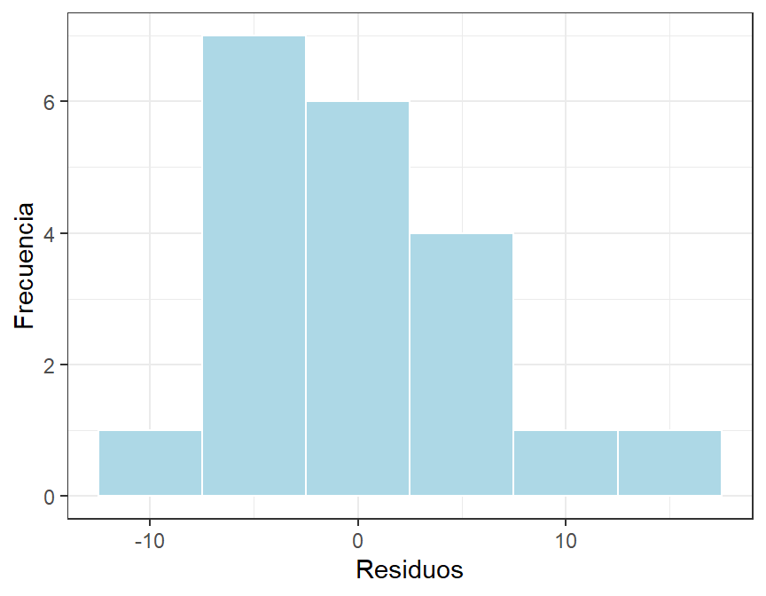
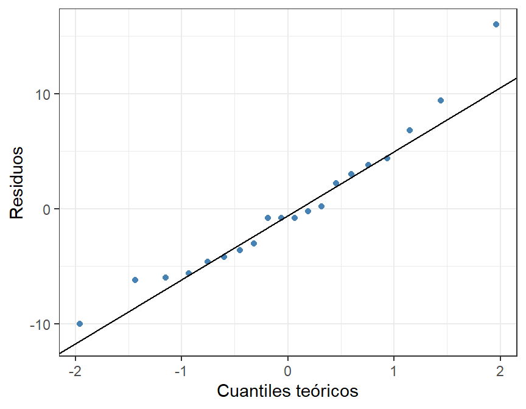
La cuenca 3 no pasa la prueba de Shapiro por separado (p = 0,02), pero los residuos del modelo sí son normales (W = 0,95; p = 0,36). El problema de cuen3 no es la asimetría sino que sus valores son casi constantes, y ninguna transformación lo resuelve:
Código
# ¿Corrige una transformación la normalidad de cuen3?
cuen3 <- datos %>% filter(cuenca == "cuen3") %>% pull(Ab)
tibble(transformacion = c("ninguna", "log10(x + 1)", "raíz cuadrada", "1/x"),
p_valor = c(shapiro.test(cuen3)$p.value,
shapiro.test(log10(cuen3 + 1))$p.value,
shapiro.test(sqrt(cuen3))$p.value,
shapiro.test(1 / cuen3)$p.value))# A tibble: 4 × 2
transformacion p_valor
<chr> <dbl>
1 ninguna 0.0214
2 log10(x + 1) 0.0221
3 raíz cuadrada 0.0217
4 1/x 0.0229Homogeneidad de varianzas.
Código
bartlett.test(Ab ~ cuenca, data = datos) # Sensible a la no normalidad
Bartlett test of homogeneity of variances
data: Ab by cuenca
Bartlett's K-squared = 10.324, df = 3, p-value = 0.016Código
leveneTest(Ab ~ cuenca, data = datos) # Centrada en la mediana (robusta)Levene's Test for Homogeneity of Variance (center = median)
Df F value Pr(>F)
group 3 1.4303 0.2708
16 Código
leveneTest(Ab ~ cuenca, data = datos, center = mean) # Centrada en la mediaLevene's Test for Homogeneity of Variance (center = mean)
Df F value Pr(>F)
group 3 3.6185 0.03628 *
16
---
Signif. codes: 0 '***' 0.001 '**' 0.01 '*' 0.05 '.' 0.1 ' ' 1Las pruebas no coinciden: Bartlett (p = 0,016) y Levene centrada en la media (p = 0,036) detectan heterocedasticidad, mientras que Levene centrada en la mediana no la detecta (p = 0,27). Las desviaciones estándar van de 1,3 (cuen3) a 10,1 (cuen4), una razón de casi 8 a 1.
Bartlett es muy sensible a la falta de normalidad dentro de los grupos, y cuen3 es justamente el grupo problemático. Aun así, una diferencia de dispersión tan grande con solo 5 datos por grupo es una señal que no conviene ignorar. La decisión prudente es no asumir varianzas iguales y usar el ANOVA de Welch como prueba principal.
NotaCorrección respecto a la versión 2021
Las notas originales afirmaban que “para las dos pruebas” (Bartlett y Levene) no se cumplía la homogeneidad. La salida de leveneTest() muestra en realidad p = 0,27. El desacuerdo entre pruebas es, en sí mismo, parte de la lección.
Independencia.
Código
modelo <- lm(Ab ~ cuenca, data = datos) # El mismo modelo del ANOVA, ajustado con lm()
set.seed(2026)
durbinWatsonTest(modelo) lag Autocorrelation D-W Statistic p-value
1 -0.298472 2.459196 0.748
Alternative hypothesis: rho != 0Código
# Residuos en el orden de las observaciones
tibble(indice = seq_along(residuals(modelo)),
residuo = residuals(modelo)) %>%
ggplot(aes(indice, residuo)) +
geom_hline(yintercept = 0, linetype = 2, color = "gray40") +
geom_line(color = "gray60") +
geom_point(color = "steelblue", size = 2) +
labs(x = "Índice (orden de las filas)", y = "Residuos")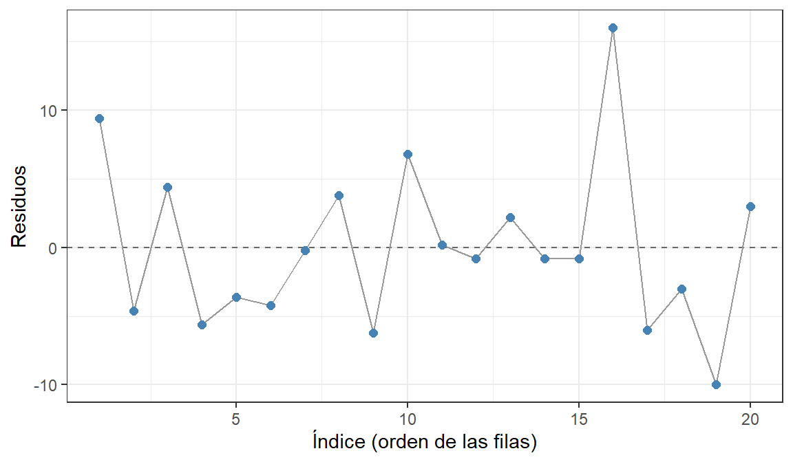
D-W ≈ 2,46 y p > 0,05: no hay evidencia de autocorrelación. Como en el Taller 2, esta prueba solo es informativa si el orden de las filas refleja la secuencia real de muestreo. Aquí las filas están ordenadas por cuenca; si quebrada indicara el orden de visita, habría que ordenar primero con arrange(datos, quebrada) y repetir la prueba.
Tamaño del efecto (η²) y potencia
El tamaño del efecto del ANOVA se mide con eta cuadrado, la proporción de la variación total que explica el factor:
\[\eta^2 = \frac{SC_{entre}}{SC_{total}} = \frac{SC_{entre}}{SC_{entre} + SC_{residual}}\]
Código
# Extraer sumas de cuadrados
sc <- summary(Ab.anov)[[1]][["Sum Sq"]]
# Calcular eta cuadrado
eta2 <- sc[1] / sum(sc)
eta2[1] 0.8522822Código
# Convertir a f de Cohen
f_cohen <- sqrt(eta2 / (1 - eta2))
f_cohen[1] 2.402013El factor cuenca explica el 85 % de la variación en la abundancia (η² = 0,85), un efecto muy grande. Como referencia de Cohen, η² = 0,01, 0,06 y 0,14 corresponden a efectos pequeño, mediano y grande.
NotaCorrección respecto a la versión 2021
El cálculo original, 4078 / (4078 + 1359.3), dividía entre la suma de cuadrados entre grupos más el cuadrado medio entre grupos, y obtenía 0,75. La fórmula correcta usa la suma de cuadrados residual: 4078 / (4078 + 707) = 0,85. Además, η² y f son escalas distintas: f = √(η² / (1 − η²)) ≈ 2,4, no 0,75. Las referencias de Cohen para f son 0,10, 0,25 y 0,40.
Código
# Calcular réplicas necesarias
pwr.anova.test(k = 4, f = 0.25, sig.level = 0.05, power = 0.80)
Balanced one-way analysis of variance power calculation
k = 4
n = 44.59927
f = 0.25
sig.level = 0.05
power = 0.8
NOTE: n is number in each groupCódigo
# Calcular potencia alcanzada
pwr.anova.test(k = 4, n = 5, f = 0.40, sig.level = 0.05)
Balanced one-way analysis of variance power calculation
k = 4
n = 5
f = 0.4
sig.level = 0.05
power = 0.2353286
NOTE: n is number in each groupDetectar un efecto mediano requeriría unas 45 quebradas por cuenca. Con 5 réplicas, incluso un efecto “grande” según Cohen (f = 0,40) solo se detectaría con una potencia cercana al 24 %. En este caso el efecto real fue mucho mayor, por eso se detectó; en un estudio con diferencias más sutiles, 5 réplicas serían insuficientes.
Tip
La potencia es 1 − β, es decir, la probabilidad de rechazar H₀ cuando es falsa. No es la probabilidad de cometer un error tipo II (β), como aparecía en las notas originales. Con una potencia de 0,80, el riesgo de un error tipo II es del 20 %.
Las pruebas
Código
# ANOVA clásico
summary(Ab.anov) Df Sum Sq Mean Sq F value Pr(>F)
cuenca 3 4078 1359.3 30.77 7.05e-07 ***
Residuals 16 707 44.2
---
Signif. codes: 0 '***' 0.001 '**' 0.01 '*' 0.05 '.' 0.1 ' ' 1Código
# ANOVA de Welch
# No asume varianzas iguales
oneway.test(Ab ~ cuenca, data = datos, var.equal = FALSE)
One-way analysis of means (not assuming equal variances)
data: Ab and cuenca
F = 33.935, num df = 3.0000, denom df = 7.1177, p-value = 0.0001387Código
# Kruskal-Wallis (alternativa no paramétrica)
kruskal.test(Ab ~ cuenca, data = datos)
Kruskal-Wallis rank sum test
data: Ab by cuenca
Kruskal-Wallis chi-squared = 17.911, df = 3, p-value = 0.0004588Las tres pruebas rechazan H₀:
- ANOVA: F = 30,8; gl = 3 y 16; p = 7,1 × 10⁻⁷.
- Welch: F = 33,9; gl = 3 y 7,1; p = 1,4 × 10⁻⁴.
- Kruskal-Wallis: H = 17,9; gl = 3; p = 4,6 × 10⁻⁴.
La abundancia media de insectos difiere entre cuencas. Los valores p de Welch y Kruskal-Wallis son mayores que el del ANOVA clásico por dos razones: Welch reduce los grados de libertad para compensar la heterocedasticidad, y Kruskal-Wallis trabaja con rangos, que conservan menos información que los valores originales.
Prueba de aleatorización (permutación)
Una prueba de permutación responde la misma pregunta sin asumir normalidad. Si H₀ fuera cierta, las etiquetas de cuenca serían intercambiables: se reasignan al azar muchas veces y se cuenta con qué frecuencia el F permutado es igual o mayor al observado.
Código
set.seed(2026)
# Obtener F observado
f_obs <- summary(Ab.anov)[[1]][["F value"]][1]
# Generar F bajo permutación
f_perm <- replicate(999, {
summary(aov(Ab ~ sample(cuenca), data = datos))[[1]][["F value"]][1]
})
# Calcular p de permutación
p_perm <- (sum(f_perm >= f_obs) + 1) / (999 + 1)
p_perm[1] 0.001Código
# Distribución nula permutada y valor observado
ggplot(tibble(F = f_perm), aes(F)) +
geom_histogram(bins = 40, fill = "lightblue", color = "white") +
geom_vline(xintercept = f_obs, color = "firebrick", linewidth = 1) +
labs(x = expression(F~bajo~H[0]~"(permutaciones)"), y = "Frecuencia")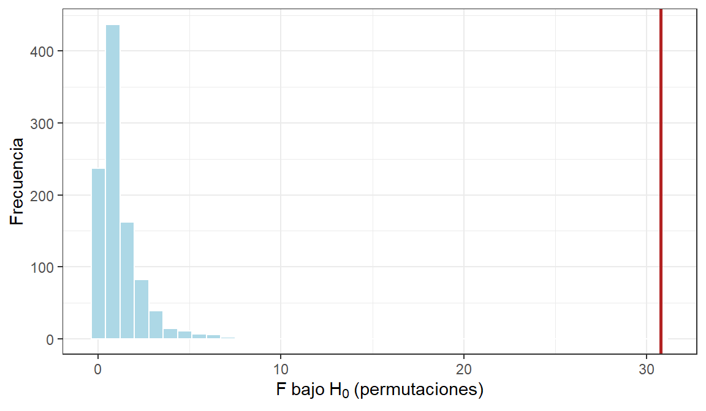
Ningún F permutado alcanza el valor observado (F = 30,8), así que p = 0,001, el mínimo posible con 999 permutaciones.
NotaCorrección respecto a la versión 2021
El código original de aleatorización (boot(..., sim = "parametric")) estaba incompleto y describía un bootstrap paramétrico, no una permutación. Las pruebas de permutación asumen que las observaciones son intercambiables bajo H₀: no corrigen un muestreo no aleatorio ni la falta de independencia. Esta misma lógica es la base de PERMANOVA, que se verá en la Semana 4.
Comparaciones múltiples (post hoc)
El ANOVA indica que al menos una cuenca difiere, pero no cuáles. Las pruebas post hoc comparan todos los pares de grupos controlando el error tipo I acumulado. Con 4 grupos hay 6 pares; si cada par se prueba con α = 0,05 sin corrección, la probabilidad de al menos un falso positivo se acerca al 26 %.
Tukey HSD (varianzas iguales)
Código
# Calcular comparaciones de Tukey
tukey1 <- TukeyHSD(Ab.anov)
tukey1 Tukey multiple comparisons of means
95% family-wise confidence level
Fit: aov(formula = Ab ~ cuenca, data = datos)
$cuenca
diff lwr upr p adj
cuen2-cuen1 -13.4 -25.4264968 -1.373503 0.0264224
cuen3-cuen1 11.2 -0.8264968 23.226497 0.0725142
cuen4-cuen1 25.4 13.3735032 37.426497 0.0000915
cuen3-cuen2 24.6 12.5735032 36.626497 0.0001308
cuen4-cuen2 38.8 26.7735032 50.826497 0.0000005
cuen4-cuen3 14.2 2.1735032 26.226497 0.0180754Código
# Intervalos de confianza de Tukey con ggplot2
tukey1$cuenca %>%
as_tibble(rownames = "par") %>%
ggplot(aes(x = diff, y = par)) +
geom_vline(xintercept = 0, linetype = 2, color = "gray40") +
geom_errorbar(
aes(xmin = lwr, xmax = upr),
orientation = "y",
height = 0.2
) +
geom_point(size = 2.5, color = "steelblue") +
labs(x = "Diferencia de medias (IC 95 % familiar)", y = NULL)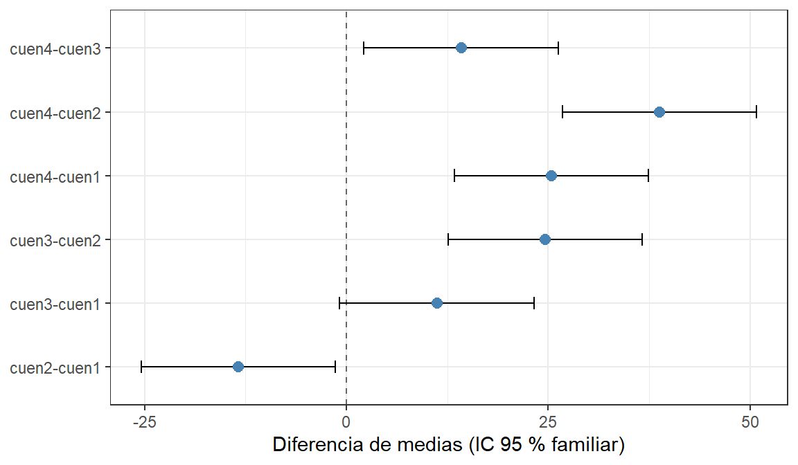
Los pares cuyo intervalo cruza la línea del cero no difieren significativamente. Con Tukey, solo cuen1 y cuen3 no difieren (p = 0,073).
Tukey también se puede obtener con multcomp, que además permite otros contrastes. Dunnett, por ejemplo, compara cada cuenca solo contra una de referencia (un control):
Código
# Comparaciones múltiples: Tukey
summary(glht(Ab.anov, linfct = mcp(cuenca = "Tukey")))
Simultaneous Tests for General Linear Hypotheses
Multiple Comparisons of Means: Tukey Contrasts
Fit: aov(formula = Ab ~ cuenca, data = datos)
Linear Hypotheses:
Estimate Std. Error t value Pr(>|t|)
cuen2 - cuen1 == 0 -13.400 4.204 -3.188 0.0262 *
cuen3 - cuen1 == 0 11.200 4.204 2.664 0.0724 .
cuen4 - cuen1 == 0 25.400 4.204 6.042 <0.001 ***
cuen3 - cuen2 == 0 24.600 4.204 5.852 <0.001 ***
cuen4 - cuen2 == 0 38.800 4.204 9.230 <0.001 ***
cuen4 - cuen3 == 0 14.200 4.204 3.378 0.0180 *
---
Signif. codes: 0 '***' 0.001 '**' 0.01 '*' 0.05 '.' 0.1 ' ' 1
(Adjusted p values reported -- single-step method)Código
# Comparaciones contra un control
# Dunnett: cada cuenca frente a cuen1
summary(glht(Ab.anov, linfct = mcp(cuenca = "Dunnett")))
Simultaneous Tests for General Linear Hypotheses
Multiple Comparisons of Means: Dunnett Contrasts
Fit: aov(formula = Ab ~ cuenca, data = datos)
Linear Hypotheses:
Estimate Std. Error t value Pr(>|t|)
cuen2 - cuen1 == 0 -13.400 4.204 -3.188 0.0150 *
cuen3 - cuen1 == 0 11.200 4.204 2.664 0.0434 *
cuen4 - cuen1 == 0 25.400 4.204 6.042 <0.001 ***
---
Signif. codes: 0 '***' 0.001 '**' 0.01 '*' 0.05 '.' 0.1 ' ' 1
(Adjusted p values reported -- single-step method)Games-Howell (varianzas desiguales)
Si se optó por el ANOVA de Welch, la comparación post hoc coherente es Games-Howell, que tampoco asume varianzas iguales:
Código
# Comparaciones con varianzas desiguales
games_howell_test(datos, Ab ~ cuenca)# A tibble: 6 × 8
.y. group1 group2 estimate conf.low conf.high p.adj p.adj.signif
* <chr> <chr> <chr> <dbl> <dbl> <dbl> <dbl> <chr>
1 Ab cuen1 cuen2 -13.4 -25.7 -1.10 0.034 *
2 Ab cuen1 cuen3 11.2 -0.580 23.0 0.059 ns
3 Ab cuen1 cuen4 25.4 7.43 43.4 0.01 **
4 Ab cuen2 cuen3 24.6 15.0 34.2 0.001 ***
5 Ab cuen2 cuen4 38.8 21.1 56.5 0.001 ***
6 Ab cuen3 cuen4 14.2 -4.09 32.5 0.109 ns
Importante
Tukey y Games-Howell no coinciden en el par cuen3–cuen4: Tukey lo declara significativo (p = 0,018) y Games-Howell no (p = 0,109). Tukey usa una varianza común para todos los grupos, y la varianza diminuta de cuen3 lo lleva a subestimar el error en las comparaciones que involucran a cuen4, la cuenca más variable. Con la heterocedasticidad observada, Games-Howell es la conclusión más confiable: cuen2 difiere de todas; cuen1 difiere de cuen2 y cuen4; cuen3 y cuen4 no se distinguen estadísticamente con 5 réplicas.
Pruebas t por pares: con y sin corrección
El taller original incluía una figura de pruebas t por pares sin ajuste del valor p, generada con un script externo (post.hoc.r). La comparación muestra por qué ese ajuste importa:
Código
# Sin corrección: cada par a α = 0,05 (infla el error tipo I)
pairwise.t.test(datos$Ab, datos$cuenca, p.adjust.method = "none")
Pairwise comparisons using t tests with pooled SD
data: datos$Ab and datos$cuenca
cuen1 cuen2 cuen3
cuen2 0.0057 - -
cuen3 0.0170 2.5e-05 -
cuen4 1.7e-05 8.3e-08 0.0038
P value adjustment method: none Código
# Con corrección de Holm y desviaciones estándar separadas por grupo
pairwise.t.test(datos$Ab, datos$cuenca, p.adjust.method = "holm", pool.sd = FALSE)
Pairwise comparisons using t tests with non-pooled SD
data: datos$Ab and datos$cuenca
cuen1 cuen2 cuen3
cuen2 0.0250 - -
cuen3 0.0353 0.0017 -
cuen4 0.0093 0.0015 0.0353
P value adjustment method: holm Sin corrección, los 6 pares resultan significativos, la misma conclusión de la figura original, que contradecía a Tukey. La corrección de Holm aumenta los valores p, pero como es escalonada deja el mayor sin cambio, y aquí todos siguen por debajo de 0,05.
Tukey, Games-Howell y Holm controlan el error tipo I acumulado, pero pueden discrepar en los pares cercanos al umbral. Lo que no es válido es comparar todos los pares sin ninguna corrección. El método se elige antes del análisis: Tukey o Games-Howell para todos los pares, y pruebas t con Holm o Bonferroni cuando se prueban pocas comparaciones planeadas.
Alternativas no paramétricas
Código
# Wilcoxon por pares con corrección de Holm
pairwise.wilcox.test(datos$Ab, datos$cuenca, p.adjust.method = "holm")
Pairwise comparisons using Wilcoxon rank sum exact test
data: datos$Ab and datos$cuenca
cuen1 cuen2 cuen3
cuen2 0.048 - -
cuen3 0.048 0.048 -
cuen4 0.048 0.048 0.048
P value adjustment method: holm
Nota
Los seis valores p son idénticos (0,048). Con 5 datos por grupo, cuando los grupos no se solapan, la prueba de Wilcoxon alcanza su p mínimo posible (≈ 0,008), y la corrección de Holm lo lleva a ese mismo valor para todos los pares. Las advertencias sobre empates (ties) se deben a los valores repetidos de cuen3. Es una limitación de las pruebas de rangos con muestras pequeñas: no pueden dar valores p más bajos, por grande que sea la diferencia.
Código
# Cajas con muescas (IC aproximado de la mediana)
ggplot(datos, aes(cuenca, Ab, fill = cuenca)) +
geom_boxplot(notch = TRUE, alpha = 0.6) +
labs(x = "Cuenca", y = "Abundancia") +
theme(legend.position = "none")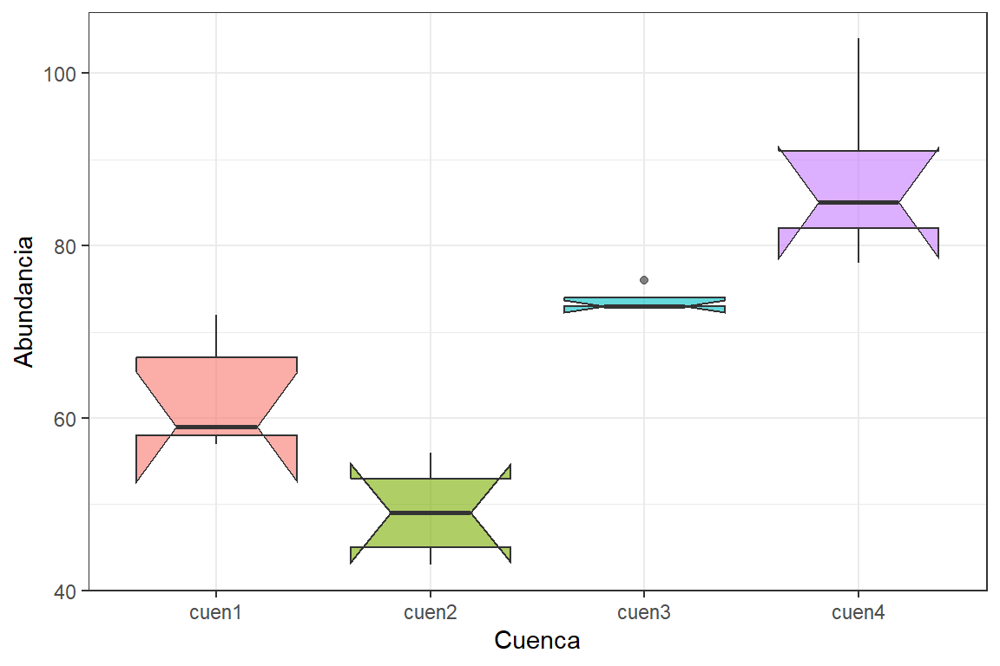
Si las muescas de dos cajas no se solapan, hay indicios de que sus medianas difieren. Con n = 5, sin embargo, las muescas suelen ser más amplias que la propia caja (R lo advierte con el mensaje “notch went outside hinges”), así que este gráfico es solo orientativo con muestras tan pequeñas.
El paquete nparcomp ofrece comparaciones no paramétricas de efectos relativos (Konietschke et al. 2012). Es una opción útil, aunque con grupos que no se solapan y n = 5 sus estimaciones quedan en el extremo (efecto relativo ≈ 0 o 1):
Código
# Requiere install.packages("nparcomp")
library(nparcomp)
multi.comp <- nparcomp(Ab ~ cuenca, data = as.data.frame(datos),
type = "Tukey", alternative = "two.sided",
asy.method = "probit", info = FALSE)
summary(multi.comp)
Nota
El paquete npmc del taller original fue retirado de CRAN y ya no se instala con install.packages(). nparcomp cumple la misma función.
Tamaño de muestra por cobertura de la población
Los procedimientos de Cohen (Sección 5, Sección 6) sirven para planear comparaciones de medias. Cuando el objetivo es estimar una proporción en la población con un error dado —por ejemplo, el porcentaje de quebradas de una cuenca con presencia de Plecópteros—, se usa la fórmula clásica para proporciones (Spiegel):
- Población infinita o de tamaño desconocido: \[n = \frac{Z_{\alpha}^2 \, p \, q}{i^2}\]
- Población finita de tamaño N: \[n = \frac{Z_{\alpha}^2 \, N \, p \, q}{i^2 (N-1) + Z_{\alpha}^2 \, p \, q}\]
Donde Z = 1,96 para un 95 % de confianza (2,58 para un 99 %); p es la proporción esperada (0,5 si se desconoce, el caso que da el n máximo); q = 1 − p; e i es el error admitido (p. ej., 0,10).
Código
# Definir función de tamaño muestral
n_proporcion <- function(p = 0.5, i = 0.10, conf = 0.95, N = Inf) {
z <- qnorm(1 - (1 - conf) / 2)
q <- 1 - p
if (is.infinite(N)) {
n <- z^2 * p * q / i^2
} else {
n <- z^2 * N * p * q / (i^2 * (N - 1) + z^2 * p * q)
}
ceiling(n) # Siempre se redondea hacia arriba
}
n_proporcion() # Población infinita, p desconocida, error 10 %[1] 97Código
n_proporcion(N = 60) # Cuenca con 60 quebradas[1] 38Código
n_proporcion(p = 0.3, N = 60) # Si un piloto sugiere un 30 % de presencia[1] 35
Tip
Conocer el tamaño de la población (N) reduce el esfuerzo necesario. Esta fórmula no reemplaza el análisis de potencia cuando la pregunta es comparar grupos: responden preguntas distintas.
Para discutir
- En la Sección 5, ¿por qué la prueba t no es mucho más significativa si el d observado es tan grande (≈ 2,2)? ¿Qué papel juega el tamaño de muestra?
- Bartlett y Levene no coinciden en la Sección 6.1. ¿Qué información adicional (gráficos, conocimiento del sistema) ayudaría a decidir? ¿Qué podría explicar, ecológicamente, que cuen3 tenga valores casi idénticos?
- Tukey y Games-Howell difieren en el par cuen3–cuen4. Si se tuviera que reportar un solo resultado en un artículo, ¿cuál se elegiría y cómo se justificaría en la sección de métodos?
- Con lo visto en la Sección 6, ¿cuántas quebradas por cuenca se propondrían para un segundo muestreo, si el mínimo efecto de interés fuera f = 0,40?
Abes un conteo. ¿Qué ventaja tendría analizarla con un GLM de Poisson (Semana 2) en lugar de un ANOVA?
Referencias
- Cohen, J. (1988). Statistical Power Analysis for the Behavioral Sciences (2nd ed.). Lawrence Erlbaum.
- Durbin, J., & Watson, G. S. (1950). Testing for serial correlation in least squares regression. Biometrika, 37, 409–428.
- Games, P. A., & Howell, J. F. (1976). Pairwise multiple comparison procedures with unequal n’s and/or variances. Journal of Educational Statistics, 1, 113–125.
- Konietschke, F., Hothorn, L. A., & Brunner, E. (2012). Rank-based multiple test procedures and simultaneous confidence intervals. Electronic Journal of Statistics, 6, 738–759.
- Logan, M. (2011). Biostatistical Design and Analysis Using R. Wiley-Blackwell.
- Munzel, U., & Hothorn, L. A. (2001). A unified approach to simultaneous rank test procedures in the unbalanced one-way layout. Biometrical Journal, 43, 553–569.
- Quinn, G. P., & Keough, M. J. (2024). Experimental Design and Data Analysis for Biologists (2nd ed.). Cambridge University Press.
- Rodríguez-Barrios, J. (2021). Análisis de datos biológicos en Excel y R. Notas de clase: Prueba de hipótesis. Universidad del Magdalena.
- Spiegel, M. R. (1991). Estadística (2.ª ed.). McGraw-Hill.